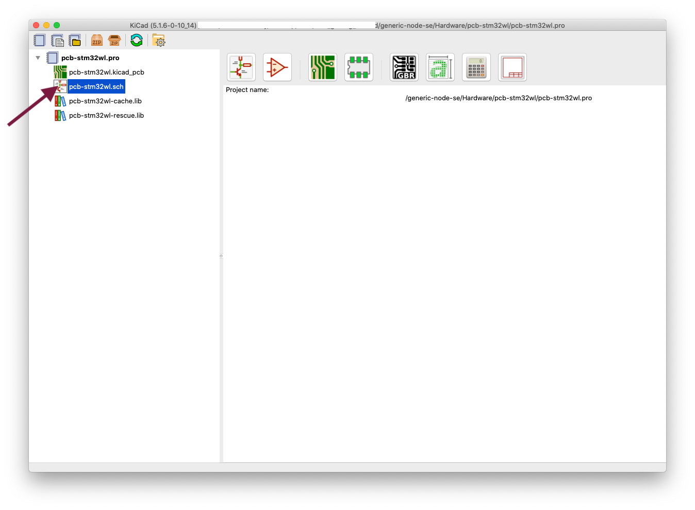
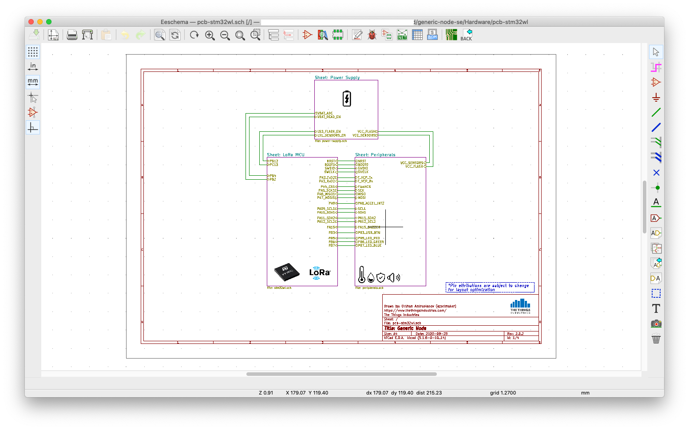
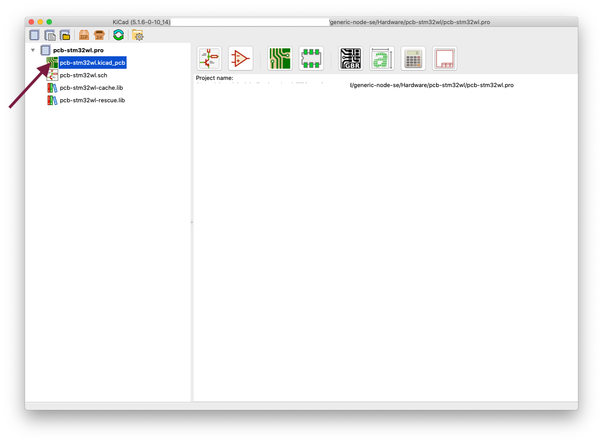
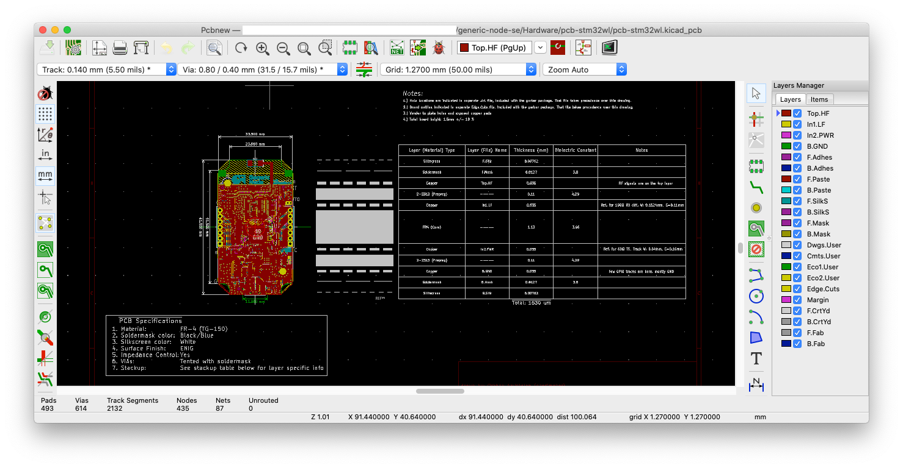

This section helps you to setup the hardware design tools and explore the reference hardware design.
Prerequisites
Setup Example
- Open KiCad and press the Open existing project button.
- Navigate to
generic-node-se/Hardware/pcb-stm32wl/and choosepcb-stm32wl.pro
Exploring the Schematics
-
Double click on the
pcb-stm32wl.sch. -
You should now be able to view and explore the schematics design.

Exploring the PCB layout
-
Double click on the
pcb-stm32wl.kicad_pcb. -
You should now be able to view and explore the PCB layout.
